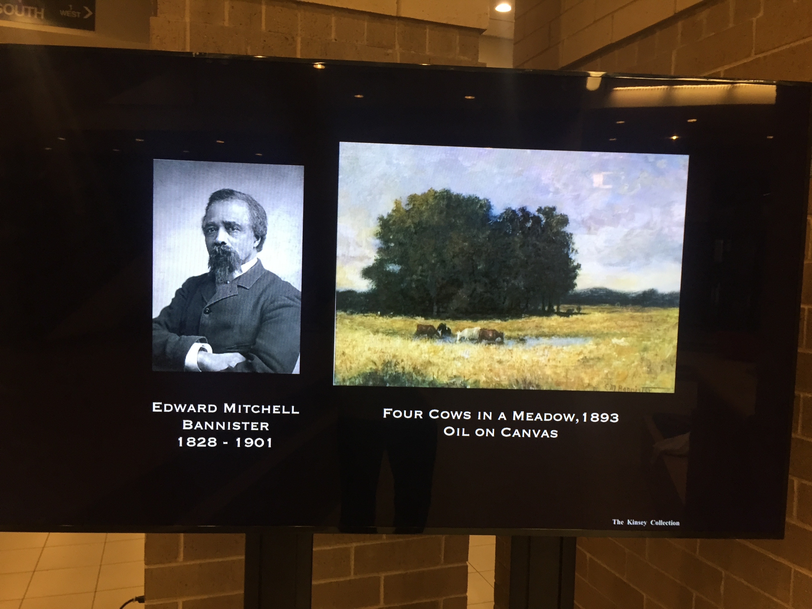
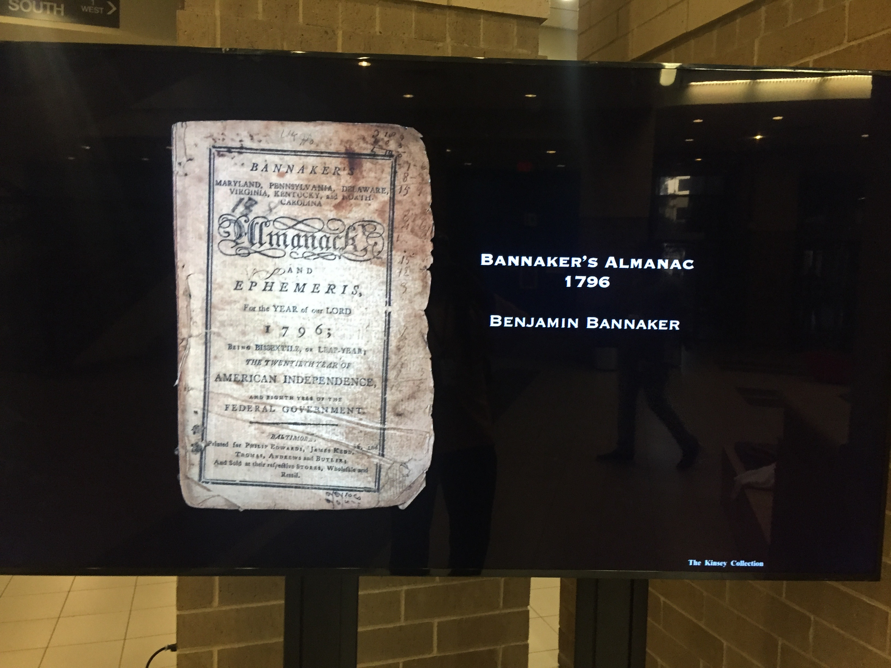
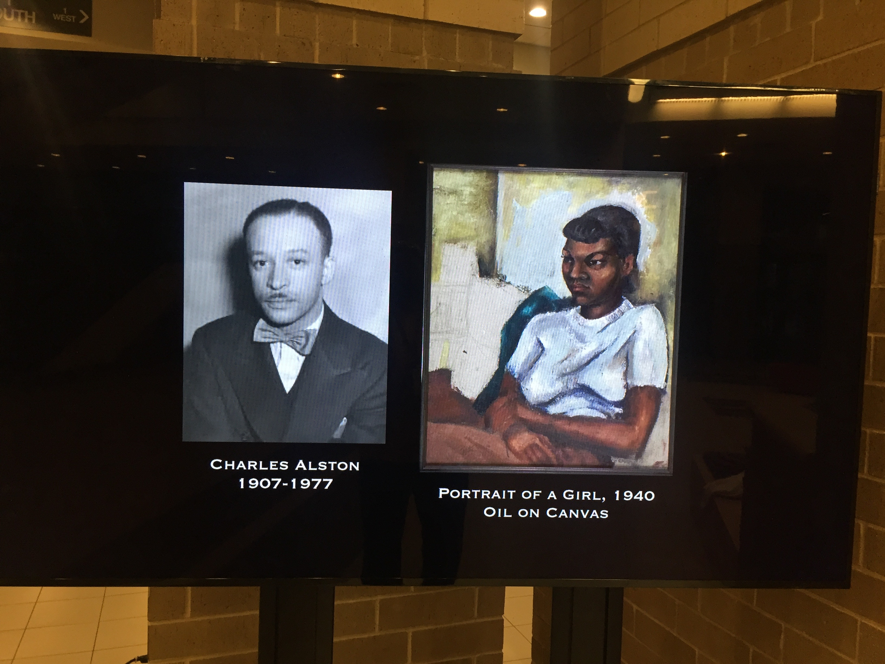
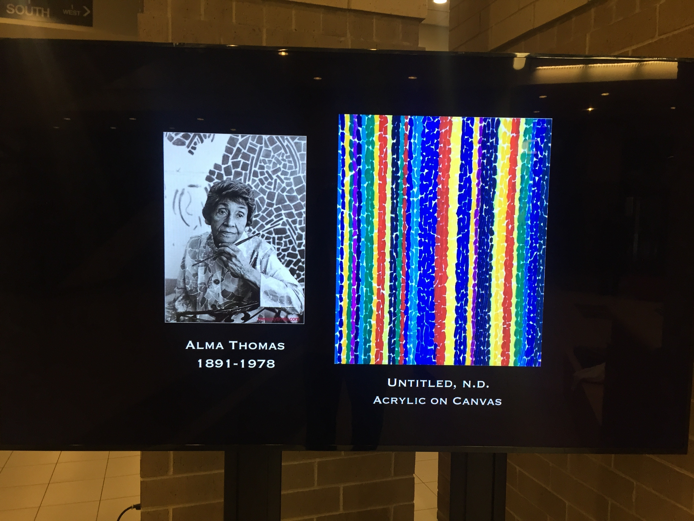
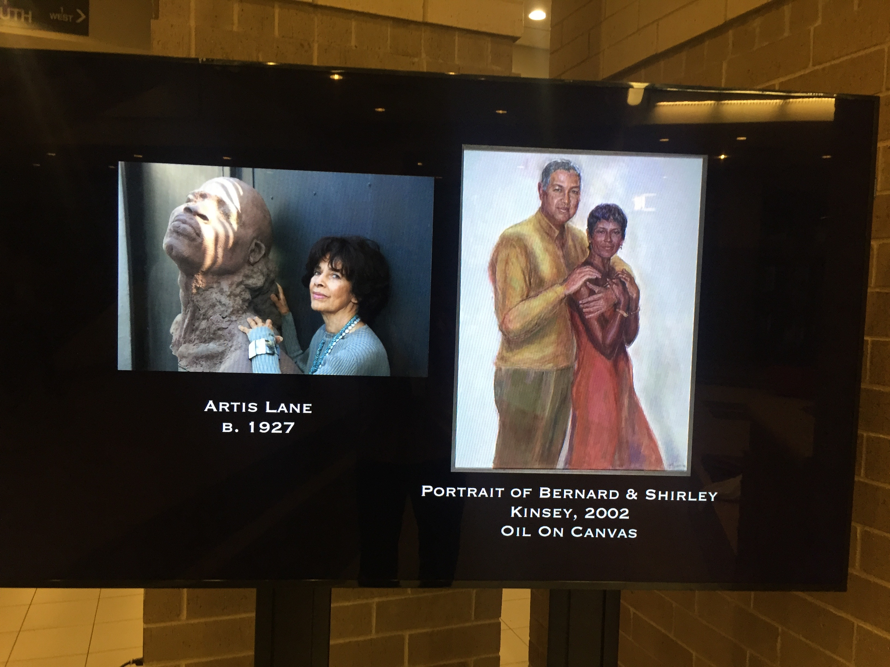

<!doctype html>
<html lang="en">
    <head>
        <meta charset="utf-8">
        <meta name="viewport" content="width=device-width, initial-scale=1.0, maximum-scale=1.0, user-scalable=no">

        <title>diversity and inclusion</title>
        <link rel="stylesheet" href="./css/reveal.css">
        <link rel="stylesheet" href="./css/theme/white.css" id="theme">
        <link rel="stylesheet" href="./css/highlight/zenburn.css">
        <link rel="stylesheet" href="./css/print/paper.css" type="text/css" media="print">


    </head>
    <body>

        <div class="reveal">
            <div class="slides"><section  data-markdown><script type="text/template">
<!-- .slide: id="title" -->
# Diversity and Inclusion
&nbsp;
&nbsp;
&nbsp;

</script></section><section  data-markdown><script type="text/template">

### Wil Pannell

 

Agile Engineering Coach working with Jason Hobbs <!-- .element: class="fragment" -->


&nbsp;
&nbsp;
&nbsp;

<aside class="notes"><p>whoami? working with? what I do?</p>
</aside></script></section><section  data-markdown><script type="text/template">

# Preface

&nbsp;

Psychological Safety <!-- .element: class="fragment" -->

&nbsp;

<aside class="notes"><p>safety is a theme in DevOps culture. how david made me feel safe</p>
</aside></script></section><section  data-markdown><script type="text/template">

<!-- .slide: data-background="resources/hussman.png"  data-background-size="contain" -->

<aside class="notes"><p>the late David Hussman story</p>
</aside></script></section><section  data-markdown><script type="text/template">

<!-- .slide: data-background="resources/hussman-prod-conf.png"  data-background-size="contain" -->

<aside class="notes"><p>David at product conference in 2017</p>
</aside></script></section><section  data-markdown><script type="text/template">

<!-- .slide: data-background="resources/david and jez.png"  data-background-size="contain" -->

<aside class="notes"><p>Jez was there, too. David offered me my first speaking engagement. Cool.</p>
</aside></script></section><section  data-markdown><script type="text/template">

<!-- .slide: data-background="resources/john-willis.jpeg"  data-background-size="contain" -->

<aside class="notes"><p>when I got there, BOOM! I found out I was slotted on the main stage right in between John Willis</p>
</aside></script></section><section  data-markdown><script type="text/template">

<!-- .slide: data-background="resources/mary poppendieck.png"  data-background-size="contain" -->

<aside class="notes"><p>and my idol, Mary Poppendieck. so that&#39;s what stage fright feels like</p>
</aside></script></section><section  data-markdown><script type="text/template">

<!-- .slide: data-background="resources/hussman.png"  data-background-size="contain" -->

<aside class="notes"><p>I worked feverishly until 15 minutes before my slot. david: what, you don&#39;t feel safe?</p>
</aside></script></section><section  data-markdown><script type="text/template">

<!-- .slide: data-background="resources/jez.png"  data-background-size="contain" -->

<aside class="notes"><p>Jez is mentoring me the same way here. Think big, start small. Limit blast radius.</p>
</aside></script></section><section  data-markdown><script type="text/template">

### Make People Awesome 

 


&nbsp;
&nbsp;
&nbsp;

<aside class="notes"><p>back to me: what I value? groom lean and agile leads, teams and organizations</p>
</aside></script></section><section  data-markdown><script type="text/template">

<!-- .slide: data-background="resources/julio.png"  data-background-size="contain" -->

<aside class="notes"><p>in the past year, I&#39;ve had the pleasure to help groom 3 new tech leads: Julio</p>
</aside></script></section><section  data-markdown><script type="text/template">

<!-- .slide: data-background="resources/pei.png"  data-background-size="contain" -->

<aside class="notes"><p>Pei</p>
</aside></script></section><section  data-markdown><script type="text/template">

<!-- .slide: data-background="resources/omeed.png"  data-background-size="contain" -->

<aside class="notes"><p>Omeed</p>
</aside></script></section><section  data-markdown><script type="text/template">

<!-- .slide: data-background="resources/lynn.jpg"  data-background-size="contain" -->

<aside class="notes"><p>this year now working on my fourth: Lynn</p>
</aside></script></section><section  data-markdown><script type="text/template">

<!-- .slide: data-background="resources/portal.jpeg"  data-background-size="contain" -->

<aside class="notes"><p>I coached one successful product (rescue): GDPR</p>
</aside></script></section><section  data-markdown><script type="text/template">

<!-- .slide: data-background="resources/seats.jpeg"  data-background-size="contain" -->

<aside class="notes"><p>the new seats product organization</p>
</aside></script></section><section  data-markdown><script type="text/template">

# Diversity and Inclusion
&nbsp;
&nbsp;
&nbsp;

<aside class="notes"><p>Back to the topic at hand. From my perspective, I could entitled this ...</p>
</aside></script></section><section  data-markdown><script type="text/template">

# ~~Di~~&nbsp;Adversity and ~~In~~&nbsp;Exclusion

(present company excepted) <!-- .element: class="fragment" -->

<aside class="notes"><p>I except AA because it is singularly the most diverse workplace I&#39;ve ever enjoyed</p>
</aside></script></section><section  data-markdown><script type="text/template">

<!-- .slide: data-background="resources/portal.jpeg"  data-background-size="contain" -->

<aside class="notes"><p>there has never been a hint of typical corporate bias: look at my diverse portal team</p>
</aside></script></section><section  data-markdown><script type="text/template">

<!-- .slide: data-background="resources/seats.jpeg"  data-background-size="contain" -->

<aside class="notes"><p>and my new seats product team ... and then: holly</p>
</aside></script></section><section  data-markdown><script type="text/template">

<!-- .slide: data-background="resources/holly.png"  data-background-size="contain" -->

<aside class="notes"><p>in all my life I never met any black folk who don&#39;t react this way</p>
</aside></script></section><section  data-markdown><script type="text/template">

<!-- .slide: data-background="resources/gdpr-leadership.png"  data-background-size="contain" -->

<aside class="notes"><p>the GDPR product and program leadership</p>
</aside></script></section><section  data-markdown><script type="text/template">

## the seats product organization leadership

Mariana Fonseca <!-- .element: class="fragment" -->

Becky Sherman <!-- .element: class="fragment" -->

Kathy Bleikamp <!-- .element: class="fragment" -->

(Anna Torres) <!-- .element: class="fragment" -->

<aside class="notes"><p>the seats product organization leadership (trying to get Anna to coach)</p>
</aside></script></section><section  data-markdown><script type="text/template">

# MLK Day

<aside class="notes"><p>first enterprise I&#39;ve worked where we&#39;ve taken off MLK day</p>
</aside></script></section><section  data-markdown><script type="text/template">

#### This is what's playing now in the HDQ2 Lobby ...

 

... for Black History Month <!-- .element: class="fragment" -->

<aside class="notes"><p>black history month</p>
</aside></script></section><section  data-markdown><script type="text/template">

#### This is what's playing now in the HDQ2 Lobby ...

 

... for Black History Month

</script></section><section  data-markdown><script type="text/template">

#### This is what's playing now in the HDQ2 Lobby ...

 

... for Black History Month

</script></section><section  data-markdown><script type="text/template">

#### This is what's playing now in the HDQ2 Lobby ...

 

... for Black History Month

</script></section><section  data-markdown><script type="text/template">

#### This is what's playing now in the HDQ2 Lobby ...

 

... for Black History Month

<aside class="notes"><p>black history month</p>
</aside></script></section><section  data-markdown><script type="text/template">

#### This is what's playing now in the HDQ2 Lobby ...

 

... for Black History Month

<aside class="notes"><p>Now,I find these observations encouraging and rewarding ...</p>
</aside></script></section><section  data-markdown><script type="text/template">

#### This is what's playing now in the HDQ2 Lobby ...

 

... for Black History Month

<aside class="notes"><p>... but somebody dismissed this attributing them as a response to some 
high-profile bias incidents.</p>
</aside></script></section><section  data-markdown><script type="text/template">

#### This is what's playing now in the HDQ2 Lobby ...

 

... for Black History Month

<aside class="notes"><p>My response. Incidences of bias matter, but how you respond to and 
learn from them matter infinitely more.</p>
</aside></script></section><section  data-markdown><script type="text/template">

# ~~Di~~&nbsp;Adversity and ~~In~~&nbsp;Exclusion

(so, present company excepted)

<aside class="notes"><p>now, let&#39;s drill down to adversity and exclusion</p>
</aside></script></section><section  data-markdown><script type="text/template">

# Adversity and Exclusion

&nbsp;

<aside class="notes"><p>typically, what we mean by D&amp;I is with respect to exclusively gender</p>
</aside></script></section><section  data-markdown><script type="text/template">

<!-- .slide: data-background="resources/gdpr-leadership.png"  data-background-size="contain" -->

<aside class="notes"><p>I&#39;m thrilled by this gender diversity ...</p>
</aside></script></section><section  data-markdown><script type="text/template">

## the seats product organization leadership

Mariana Fonseca <!-- .element: class="fragment" -->

Becky Sherman <!-- .element: class="fragment" -->

Kathy Bleikamp <!-- .element: class="fragment" -->

(Anna Torres) <!-- .element: class="fragment" -->

<aside class="notes"><p>... and this</p>
</aside></script></section><section  data-markdown><script type="text/template">

<!-- .slide: data-background="resources/rachel.png"  data-background-size="contain" -->

<aside class="notes"><p>me tweeting about my first majority women engineering meeting</p>
</aside></script></section><section  data-markdown><script type="text/template">

<!-- .slide: data-background="resources/garage-leadership-meeting.jpg"  data-background-size="contain" -->

<aside class="notes"><p>my first garage education leadership meeting</p>
</aside></script></section><section  data-markdown><script type="text/template">

# Adversity and Exclusion

&nbsp;

<aside class="notes"><p>the irony of D&amp;I is that it excludes entertaining 
racial, ethnic and LGBT diversity?</p>
</aside></script></section><section  data-markdown><script type="text/template">

<!-- .slide: data-background="resources/martin1.png"  data-background-size="contain" -->

<aside class="notes"><p>I asked Martin Fowler once ...</p>
</aside></script></section><section  data-markdown><script type="text/template">

<!-- .slide: data-background="resources/martin2.png"  data-background-size="contain" -->

<aside class="notes"><p>his dismissal of racial, ethnic and LGBT diversity was casual, at best</p>
</aside></script></section><section  data-markdown><script type="text/template">

# Adversity and Exclusion

is real <!-- .element: class="fragment" -->

is racial <!-- .element: class="fragment" -->

&nbsp;

</script></section><section  data-markdown><script type="text/template">

in my org I am the only black engineer

(3.5 years and running) <!-- .element: class="fragment" -->

in my career I've only once not been the only black engineer <!-- .element: class="fragment" -->

&nbsp;

<aside class="notes"><p>what do I do about it? I take mentoring seriously</p>
</aside></script></section><section  data-markdown><script type="text/template">

<!-- .slide: data-background="resources/jamon.jpeg"  data-background-size="contain" -->

<aside class="notes"><p>that time I worked with another black engineer, I hired him myself ... 
it was my singular gratification when twice I recommended him to his new jobs</p>
</aside></script></section><section  data-markdown><script type="text/template">

<!-- .slide: data-background="resources/monq.png"  data-background-size="contain" -->

<aside class="notes"><p>I worked evenings and weekend mornings with monq and sent him to IL</p>
</aside></script></section><section  data-markdown><script type="text/template">

# Adversity and Exclusion

is real <!-- .element: class="fragment" -->

is racial <!-- .element: class="fragment" -->

is many-fold worse for black women engineers <!-- .element: class="fragment" -->

the forces arrayed against Diversity and Inclusion are daunting <!-- .element: class="fragment" -->

&nbsp;

</script></section><section  data-markdown><script type="text/template">

<!-- .slide: data-background="resources/cornell.png"  data-background-size="contain" -->

<aside class="notes"><p>the irony of my cornell story was I did it out or spite, and dropped out after the first year</p>
</aside></script></section><section  data-markdown><script type="text/template">

## Why Black Folk aren't hired

<video class="stretch" controls="controls" data-autoplay src="resources/Would you want to be treated like blacks.mp4"></audio>

&nbsp;

_**(Jane Elliott: anti-racism experiment circa 1972) **_ <!-- .element: style="color:maroon; font-size: .5em" -->

</script></section><section  data-markdown><script type="text/template">

# Adversity and Exclusion

what we can do about it is kinda simple

mentor more black folk <!-- .element: class="fragment" -->

hire more black folk <!-- .element: class="fragment" -->

&nbsp;

</script></section><section  data-markdown><script type="text/template">

## How to Hire Black Folk

&nbsp;

<audio controls="controls" data-autoplay src="resources/podcast.mp3"></audio>

&nbsp;

_**(interview: geek joy podcast circa 2016) **_ <!-- .element: style="color:maroon; font-size: .5em" -->

</script></section><section  data-markdown><script type="text/template">

# Adversity and Exclusion

as a final note ... <!-- .element: class="fragment" -->

... among the strongest voices in tech today ... <!-- .element: class="fragment" -->

... for real Diversity and Inclusion <!-- .element: class="fragment" -->

(follow him on twitter to see for yourself) <!-- .element: class="fragment" -->

&nbsp;

</script></section><section  data-markdown><script type="text/template">

<!-- .slide: data-background="resources/jez.png"  data-background-size="contain" -->


</script></section></div>
        </div>

        <script src="./lib/js/head.min.js"></script>
        <script src="./js/reveal.js"></script>

        <script>
            function extend() {
              var target = {};
              for (var i = 0; i < arguments.length; i++) {
                var source = arguments[i];
                for (var key in source) {
                  if (source.hasOwnProperty(key)) {
                    target[key] = source[key];
                  }
                }
              }
              return target;
            }

            // Optional libraries used to extend on reveal.js
            var deps = [
              { src: './lib/js/classList.js', condition: function() { return !document.body.classList; } },
              { src: './plugin/markdown/marked.js', condition: function() { return !!document.querySelector('[data-markdown]'); } },
              { src: './plugin/markdown/markdown.js', condition: function() { return !!document.querySelector('[data-markdown]'); } },
              { src: './plugin/highlight/highlight.js', async: true, callback: function() { hljs.initHighlightingOnLoad(); } },
              { src: './plugin/zoom-js/zoom.js', async: true },
              { src: './plugin/notes/notes.js', async: true },
              { src: './plugin/math/math.js', async: true }
            ];

            // default options to init reveal.js
            var defaultOptions = {
              controls: true,
              progress: true,
              history: true,
              center: true,
              transition: 'default', // none/fade/slide/convex/concave/zoom
              dependencies: deps
            };

            // options from URL query string
            var queryOptions = Reveal.getQueryHash() || {};

            var options = {"transition":"fade"};
            options = extend(defaultOptions, options, queryOptions);
        </script>


        <script>
          Reveal.initialize(options);
        </script>
    </body>
</html>
